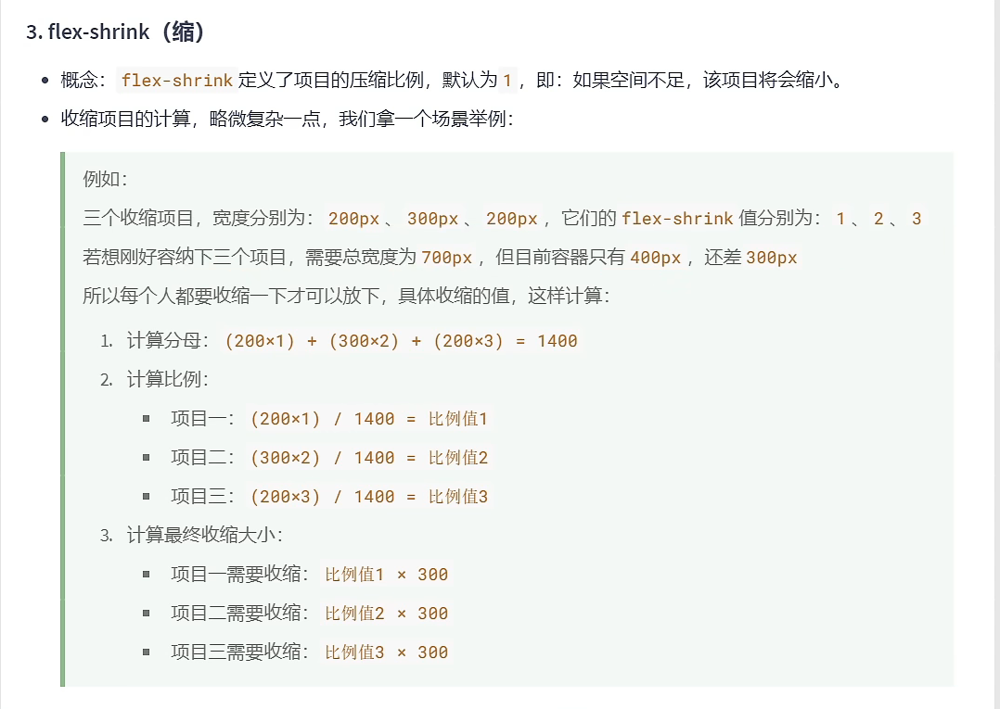

伸缩盒模型又称弹性盒子
目前除了部分IE浏览器不支持,其他浏览器均已支持
传统布局是指:基于传统盒状模型,主要靠:display 属性 + position 属性 + float 属性
flex布局目前在移动端应用比较广泛,因为传统布局不能很好的呈现在移动设备上
无论原来是什么元素（块、行内块、行内），一旦成为了伸缩项目，全部会“块状化”
伸缩容器是指: 开启了 flex 的元素，一个容器可以同时是伸缩项目、伸缩容器。
伸缩项目是指: 伸缩容器所有 子元素 自动成为伸缩项目，仅子元素为伸缩项目
display: flex; 开启弹性盒子
主轴与侧轴概念： 伸缩项目沿着主轴排列，默认水平，默认方向从左到右 与主轴垂直的就是侧轴，默认垂直，默认方向从上到小
主轴方向： flex-direction: ; row : 主轴方向水平从左到右 row-reverse : 水平反转 column : 主轴方向垂直从上到下 column-reverse : 垂直反转主轴换行方式：
flex-wrap: ;
nowrap : 不换行，多余的伸缩项目和原来的一起平分撑满空间
wrap : 自动换行
wrap-reverse : 反向换行
复合属性：
flex-flow: row wrap;
复合了flex-direction 和 flex-wrap 两个属性，不挑顺序
主轴对齐方式 （伸缩项目在主轴上的排列方式）
justify-content: ;
flex-start---主轴起始位置
flex-end------主轴结束位置
center--------中间对齐
space-around--项目均匀分布在一行中，项目与项目的距离，是项目距边缘的二倍
space-between-项目均匀分布在一行中，项目与项目之间的距离是相等的，项目边缘没有距离--*
space-evenly--项目均匀的分布在一行中
元素的水平垂直居中方案 方法1 display: flex; justify-content: center; align-items: center; 方法二 display: flex; margin: auto;
项目在主轴的基准长度 flex-basis: 300px; 设置伸缩项目在主轴上的基准长度，若主轴是横向的宽失效，若主轴是纵向的高失效 浏览器根据这个属性设置的值,计算主轴上是否有多余空间,默认是auto值,即：伸缩项目的宽或高。
伸缩项目-伸 flex-grow: 1; 权重比例,默认0 伸缩项目-缩 flex-shrink: 1; 压缩比例，和拉伸比例计算不一样,日常很少使用，面试问题  flex复合属性 复合了: flex-grow 、flex-shrink 、flex-basis 三个属性，默认值为 0 1 auto 如果写 flex: 1 1 auto , 可简写为: flex: auto 如果写 flex: 1 1 0 , 可简写为: flex: 1 如果写 flex: 0 0 auto , 可简写为: flex: none 如果写 flex: 0 1 auto , 可简写为: flex: 0 auto -- 即 flex 初始值
排序与单独对齐 ourder: 1; 项目排列顺序,默认值0,数值越小，排列越靠前。 align-self: center; 只能调节侧轴的单独对齐-用的少-默认auto